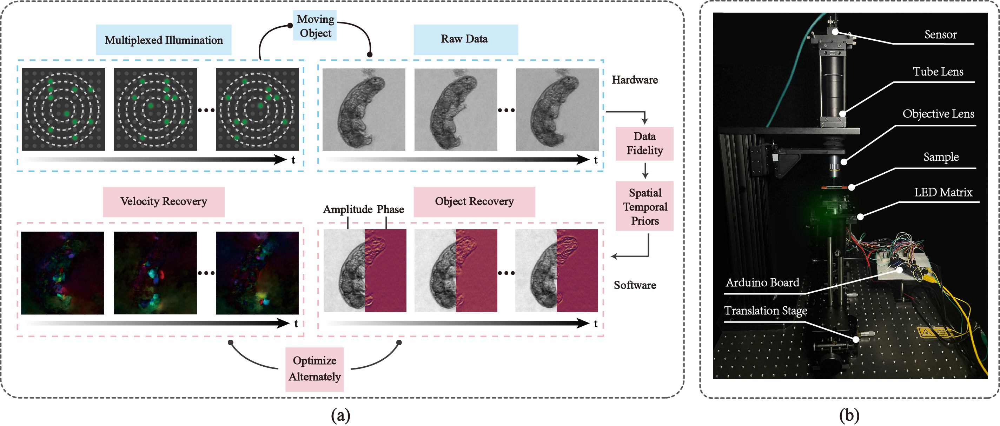

Dynamic Fourier Ptychography via Space-Time Optimization.
Ming Sun, Kunyi Wang, Yogeshwar Nath Mishra, Simeng Qiu, Wolfgang Heidrich
Optica Imaging Congress (Computational Optical Sensing and Imaging 2024).

Principle of dynamic FP via spacetime framework. (a) Overall pipeline. (b) Experimental setup.
Abstract
We introduce a dynamic Fourier ptychography (FP) technique via a spacetime framework, jointly recovering object states and deformation fields for detailed observation
of rapid, complex behaviors in living cells.
Paper
Paper [Ming2024DynamicFP.pdf (1.2MB)]